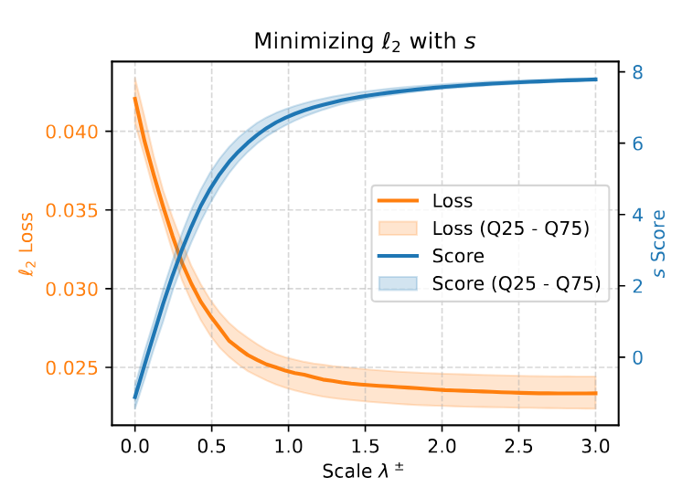
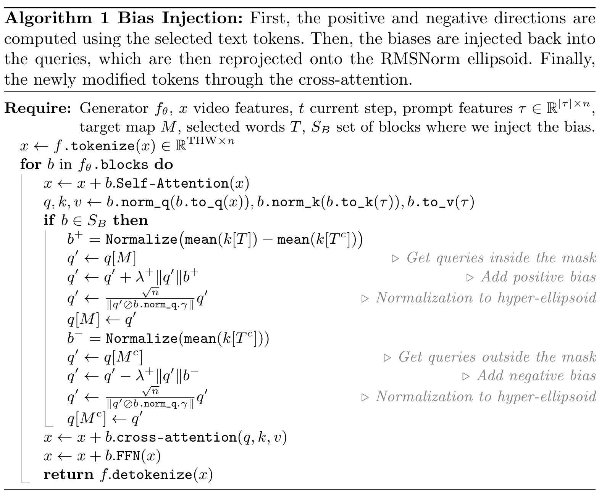
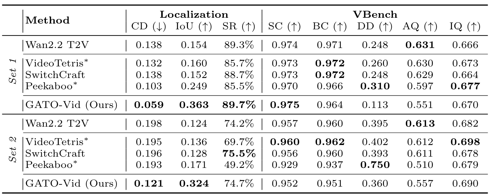

Abstract
Diffusion Transformer Text-to-Video models have achieved remarkable synthesis quality, yet fine-grained spatial controllability remains a significant challenge. While existing training-free methods produce solid overall results in spatially grounded generation, i.e., placing a specific object in a designated location, they rely on gradient-based optimization techniques that incur prohibitive computational overhead, a bottleneck amplified in modern large-scale architectures. To address this limitation, we present Gradient-free Analytical Trajectory Optimization Video Generation (GATO-Vid), a novel training-free and gradient-free approach for precise spatial guidance. Rather than relying on costly backward passes, we introduce an alternative cross-attention score and solve it analytically to obtain an exact, closed-form solution. To use our analytical solution, we propose an on-the-fly injection mechanism tailored to the topological manifold of the transformer's latent space. Our experiments demonstrate that GATO-Vid significantly outperforms existing baselines in localization accuracy while introducing minimal computational overhead.

Fig 1. We proposed a new score that minimizes the ell_2 score on the fly.

Algorithm 1. Main injection mechanism.
Quantitative Results

Table 1. Quantitative Localization and Quality Metrics: GATO-Vid outperforms every baseline on the localization metrics with a trade-off. Its superior alignment comes at the cost of generation quality, as shown by the VBench metrics. All methods marked with $^*$ were re-implemented on Wan2.2.
Qualitative Comparison
From left to right: GATO-Vid (Ours), Peekaboo, VideoTetris, SwitchCraft, Wan2.2 T2V Vanilla
Ablations
From left to right: GATO-Vid (Ours), No Projection, No Gaussian Fit, No Foreground, No Background
BibTeX
@misc{jeanneret2026spatiallygroundedtexttovideogenerationinferencetime,
title={Spatially-Grounded Text-to-Video Generation via Inference-Time Gradient-Free Optimization},
author={Guillaume Jeanneret and Mathis Koroglu and Hugo Caselles-Dupré and Arnaud Dapogny and Matthieu Cord},
year={2026},
eprint={2608.13037},
archivePrefix={arXiv},
primaryClass={cs.CV},
url={https://arxiv.org/abs/2608.13037},
}